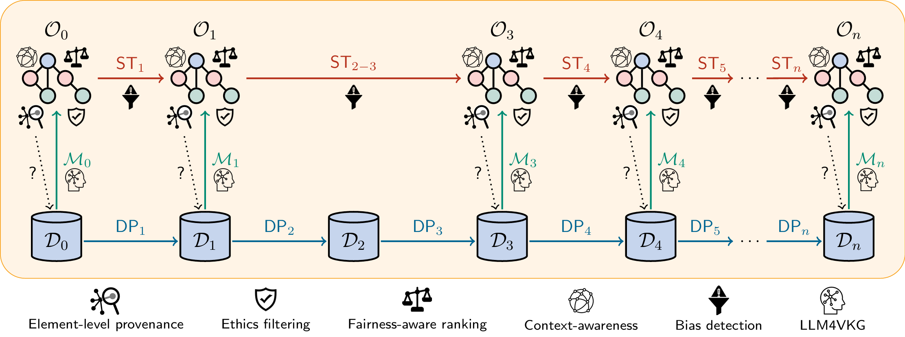

Welcome to the S-PIC4CHU Project!
The S-PIC4CHU project has the goal to develop new models and techniques for the preparation of data for analysis in the context of Data Science. The project is motivated by the consideration that real-world data is often inaccurate, noisy, uncertain, and incomplete, and its meaning is described in a very shallow way.
Manual intervention can often solve these problems, but it is time-consuming, and therefore not scalable with respect to the amount of data nowadays available. The main innovation provided by S-PIC4CHU will be a generalized use of semantics-based techniques to support data interpretation along all the activities of data preparation. We advocate a Data Preparation Pipeline (DPP) organized as a set of steps, the very first of which is the semantic enrichment of the data, whose crucial role is to annotate all the data of interest with semantic information, capturing domain knowledge that comes from ontologies and knowledge graphs.

All the subsequent steps of the DPP take advantage of the semantics associated with the data, and include: data cleaning on the basis of various kinds of constraints (possibly after data integration), data transformation, data reduction, deduplication, error detection, missing value imputation, and space transformations in the case of multimedia data.
The overall task is complicated also by the fact that optimizing one dimension of data quality might cause a quality loss for another dimension. In this respect, semantic techniques will also be useful to support the reconciliation of conflicts that exist among different data quality dimensions.
The challenges raised by this paradigm shift in data preparation will require the formalization of new methods and techniques for each of the steps of the data preparation process, and novel solutions to key challenging scientific issues. The results of S-PIC4CHU will thus lead to innovative semantics-enabled techniques and tools, outperforming those available on the market, in terms of both efficiency and effectiveness.
The S-PIC4CHU approach will be validated on two selected use cases, drawn from different domains, with the aim of showing the generality and effectiveness of the developed solutions.